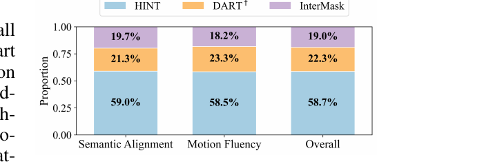

CORE IDEA
テキスト駆動の複数人モーション生成を「自己回帰 × 拡散」で初めて解いた枠組み。
① 各人のモーションを正準化潜在空間（自分中心のローカル座標）で符号化して
「動きそのもの」と「人と人の位置関係」を切り離し、
② スライディングウィンドウでローカル条件（窓内の履歴・相手・単語）とグローバル条件（窓位置・全体テキスト）を
階層的に与える。これにより長尺・可変長・可変人数の生成を、人数が増えても再学習なしで実現する。
Text-driven multi-human motion generation with complex interactions remains a challenging problem. Despite progress in performance, existing offline methods that generate fixed-length motions with a fixed number of agents, are inherently limited in handling long or variable text, and varying agent counts. These limitations naturally encourage autoregressive formulations, which predict future motions step by step conditioned on all past trajectories and current text guidance.
In this work, we introduce HINT, the first autoregressive framework for multi-human motion generation with Hierarchical INTeraction modeling in diffusion. First, HINT leverages a disentangled motion representation within a canonicalized latent space, decoupling local motion semantics from inter-person interactions. This design facilitates direct adaptation to varying numbers of human participants without requiring additional refinement.
本研究では HINT を提案する。これは、拡散モデルの中で階層的な相互作用（Hierarchical INTeraction）をモデル化する、複数人モーション生成のための初の自己回帰フレームワークである。第一に、HINT は正準化潜在空間の中で分離された（disentangled）モーション表現を用い、局所的な動きの意味（local motion semantics）と人物間の相互作用とを切り離す。この設計により、追加の微調整なしに、人数の変化へ直接適応できる。
Second, HINT adopts a sliding-window strategy for efficient online generation, and aggregates local within-window and global cross-window conditions to capture past human history, inter-person dependencies, and align with text guidance. This strategy not only enables fine-grained interaction modeling within each window but also preserves long-horizon coherence across all the long sequence. Extensive experiments on public benchmarks demonstrate that HINT matches the performance of strong offline models and surpasses autoregressive baselines. Notably, on InterHuman, HINT achieves an FID of 3.100, significantly improving over the previous state-of-the-art score of 5.154.
Human motion generation shows diverse applications spanning character animation, human-robot interaction, virtual reality, and content creation. Recently, text-driven approaches have received growing attention, as they allow natural language to serve as a human-friendly control for generating semantically aligned human trajectories. Beyond the single-human setting, generating realistic, diverse, and controllable interactions for multiple humans remains highly challenging.
Existing approaches are offline frameworks that generate motions of a fixed frame length and a fixed number of agents, as shown in Fig. 2(a). While effective for short sequences, these methods are inherently limited in handling variable-length natural language descriptions, dynamic interaction patterns, and varying agent counts. Moreover, they often fail to capture long-range dependencies across extended motion sequences, leading to incoherent or repetitive behaviors. These challenges naturally call for autoregressive formulations, as shown in Fig. 2(b), where future motions are generated step by step conditioned on both past trajectories and textual instructions. Yet, autoregressive models in this domain remain underexplored, particularly for the multi-human setting with complex interactions.
In this work, we propose HINT, the first autoregressive diffusion-based framework for multi-human motion generation with hierarchical interaction modeling in diffusion. HINT presents two novel contributions. First, Canonicalized Latent Space, which encodes each human's motion in its own local coordinate system, rather than encoding all agents in world coordinates. Prior approaches typically adopt such joint space, where motion dynamics are entangled with inter-agent positions, limiting scalability and requiring re-training when the number of agents changes. In contrast, HINT decouples individual motion representation from social interactions, while explicit relative transformations (rotations and translations) among agents are provided separately as conditions in diffusion. This separation enables the latent space to concentrate on motion semantics and ensures seamless adaptability to scenarios involving variable number of agents without finetuning or re-training.
本研究では、拡散モデルの中で階層的に相互作用をモデル化する、複数人モーション生成のための初の自己回帰・拡散ベース枠組み HINT を提案する。HINT には2つの新規な貢献がある。第一は正準化潜在空間であり、全エージェントを世界座標で符号化するのではなく、各人の動きをその人自身のローカル座標系で符号化する。従来手法は典型的にこのような共有空間（joint space）を採用しており、動きのダイナミクスがエージェント間の位置関係ともつれ合ってしまうため、スケーラビリティが制限され、人数が変わると再学習が必要になる。対照的に HINT は、個々の動き表現を社会的な相互作用から切り離し、エージェント間の明示的な相対変換（回転・並進）を拡散モデルへの条件として別に与える。この分離により、潜在空間は動きの意味に集中でき、微調整や再学習なしに人数が変わるシナリオへ滑らかに適応できる。
Second, we propose a sliding-window strategy for efficient online generation. Local to global temporal, spatial, and semantic cues are then aggregated to guide the diffusion process. Local conditions are collected inside each window, i.e., target human's motion history, step index, partners' motion, and word-level text guidance, capturing fine-grained social and temporal dependencies within the window and preventing semantic drift. Global conditions, including sequence index of the current window, total frame length, and compositional command text guidance, are used to locate the current window within the entire sequence and thereby enforce long-term consistency. This hierarchical design enables natural, coherent, and semantically aligned multi-human motion generation, as shown in Fig. 1.
We conduct extensive experiments on the InterHuman and InterX benchmarks. Results show that HINT not only matches the performance of strong offline methods but also outperforms existing autoregressive baselines by a large margin.
Recent work approaches single-person motion generation mainly with diffusion or autoregressive models. Diffusion-based methods capture complex distributions and yield high-quality sequences across modalities such as text, audio, and scene context, but are typically limited to fixed-length clips. Autoregressive models instead generate motions step by step, enabling variable-length synthesis and finer control, though they are prone to error accumulation. DART bridges these paradigms through a latent diffusion–autoregressive design that supports streaming, controllable motion generation. We build on this paradigm to extend autoregressive diffusion to multi-human interaction, explicitly modeling semantic dependencies and coordination between participants.
Recent years have witnessed increasing interest in human interaction motion generation, particularly in the areas of reaction and inter-action generation. Reaction generation aims to synthesize plausible responses conditioned on a partner's motion, with approaches ranging from Transformer-based coordination and diffusion with distance constraints to physics-driven modeling, spatio-temporal cross-attention, and reasoning with LLMs. Interaction generation instead models both humans jointly, using dual-branch diffusion, lightweight communication across pretrained models, dual-level textual prompts, LLM-based planning, or masked spatio-temporal token prediction.
Beyond pairwise interactions, SocialGen leverages language descriptions for group social behaviors, Multi-Person Interaction Generation scales two-person priors to larger groups, and PINO enables long-duration and customizable generation for arbitrary group sizes. Despite these advances, most methods still generate fixed-length sequences, limiting their applicability in real-time and streaming scenarios.
We address text-driven online multi-human motion generation, which sequentially predicts future poses of N agents conditioned on their past motions and a textual description T. Formally, let
M1:T = { mt(i) ∈ ℝd | i = 1,…,N; t = 1,…,T } (1)
denote the motion sequence of N humans over T timesteps, where mt(i) is the motion representation of agent i at time t, d is the dimension of the representation. Autoregressive multi-human motion generation recursively predicts
M̂t:t+K ∼ pθ( Mt:t+K | M̂1:t−1, T1:t+K ) (2)
with trained parameters θ, thereby capturing both temporal dependencies across timesteps and social dependencies across humans. We jointly predict K future timesteps for efficiency. For clarity, we use h1:HA to represent the H-timestep history motion of agent A and f1:KA to represent the K-timestep future motion within a sliding window. We empirically set H = 4, K = 16.
我々は、テキスト駆動のオンライン複数人モーション生成に取り組む。これは、過去のモーションとテキスト記述 T を条件に、N 人のエージェントの未来の姿勢を逐次的に予測するものである。形式的には、式(1) を T ステップにわたる N 人のモーション系列とする。ここで mt(i) は時刻 t におけるエージェント i のモーション表現、d はその表現の次元である。自己回帰的な複数人モーション生成は、学習済みパラメータ θ を用いて式(2) を再帰的に予測し、これによってタイムステップ間の時間的依存と人物間の社会的依存の両方を捉える。効率のため、K ステップぶんの未来を同時に予測する。記法の明確化のため、h1:HA をエージェント A の H ステップの履歴モーション、f1:KA をスライディングウィンドウ内の K ステップの未来モーションとする。経験的に H = 4, K = 16 と設定する。
3.1 Overview of HINT（全体像）
Fig. 3 demonstrates the two-human motion generation pipeline of HINT, which employs a sliding-window strategy to autoregressively extend future segments with a diffusion model (see Fig. 2). We show that HINT naturally generalizes to multi-human settings in Sec. 3.5.
図3 は HINT の2人モーション生成パイプラインを示す。これはスライディングウィンドウ戦略を用い、拡散モデルで未来のセグメントを自己回帰的に延長する（図2参照）。HINT が複数人設定へ自然に一般化できることは 3.5 節で示す。
Figure 3 (a)(b).(a) Motion VAE：各人を正準化（Canonicalize）して潜在 zf に符号化し、デコーダ D で復元する（学習後は凍結）。(b) 自己回帰生成：Interaction-Aware Diffusion が次の K フレームの潜在を生成し、デコードして履歴に継ぎ足しながら窓をずらす。（凡例：ⓒ=連結、⊕=加算、^=予測値、~=ノイズ付与、L/G=局所/大域条件）
Motion VAE. In Fig. 3(a), we first construct a canonicalized shared latent space to map raw motion sequences into latent representations. Concretely, the motion of each individual, m_A, m_B ∈ ℝT×d, with T timesteps and d dimensions, is divided into overlapping windows and canonicalized in its local coordinate to remove absolute position. A transformer-based Motion VAE, following DART, is then employed for sliding-window modeling. The VAE consists of an encoder E and a decoder D. Given a window with H history h1:H(i) and K future frames f1:K(i) for human i ∈ {A,B}, E conditions on the history and encodes the future into a latent vector zf(i) ∈ ℝl in the shared latent space. D reconstructs the K future frames from zf(i), conditioned on the corresponding history. Once trained, both encoder E and decoder D are frozen in subsequent modules, ensuring that the latent space remains stable and consistent.
Motion VAE。 図3(a) では、まず生のモーション系列を潜在表現へ写すための正準化された共有潜在空間を構築する。具体的には、各個人の動き m_A, m_B ∈ ℝT×d（T ステップ・d 次元）を重なり合う窓に分割し、絶対位置を取り除くために各自のローカル座標で正準化する。次に、DART にならった Transformer ベースの Motion VAE をスライディングウィンドウのモデル化に用いる。VAE はエンコーダ E とデコーダ D からなる。人 i ∈ {A,B} の、H フレームの履歴 h1:H(i) と K フレームの未来 f1:K(i) をもつ窓が与えられると、E は履歴を条件として未来を共有潜在空間内の潜在ベクトル zf(i) ∈ ℝl に符号化する。D は対応する履歴を条件として、zf(i) から K フレームの未来を復元する。一度学習されると、エンコーダ E とデコーダ D は以降のモジュールでは凍結され、潜在空間が安定かつ一貫に保たれる。
Sliding-Window Strategy for Autoregressive Generation. As illustrated in Fig. 3(b), HINT employs a sliding-window autoregressive process for both training and generation. During training, the ground-truth motion sequence is divided into overlapping windows. Future frames in each window are encoded into a latent zf(i), i ∈ {A,B} by the motion encoder E, where noise is added to obtain z̃f(i). Conditioned on z̃f(i), historical motion hf(i), and text T, the Interaction-Aware Diffusion model learns to predict the denoised latent ẑf(i). During inference, we sample a future latent ẑf(i) conditioned on the history and text. Then the frozen decoder D reconstructs the future K frames f̂1:K(i) from ẑf(i). f̂1:K(i) is appended to the history to condition the next window, proceeding autoregressively.
自己回帰生成のためのスライディングウィンドウ戦略。 図3(b) に示すように、HINT は学習と生成の両方でスライディングウィンドウの自己回帰過程を用いる。学習時には、正解（GT）のモーション系列を重なり合う窓に分割する。各窓の未来フレームは、モーションエンコーダ E によって潜在 zf(i)（i ∈ {A,B}）に符号化され、そこへノイズを加えて z̃f(i) を得る。この z̃f(i)・履歴モーション hf(i)・テキスト T を条件として、Interaction-Aware Diffusion モデルはノイズ除去後の潜在 ẑf(i) を予測するよう学習する。推論時には、履歴とテキストを条件に未来潜在 ẑf(i) をサンプリングする。次いで凍結されたデコーダ D が ẑf(i) から未来 K フレーム f̂1:K(i) を復元する。f̂1:K(i) を履歴に継ぎ足して次の窓の条件とし、自己回帰的に進めていく。
Interaction-Aware Diffusion. Fig. 3(c) illustrates the Interaction-Aware Diffusion module, exemplified with two-human interaction generation. The model employs shared weights and shared conditioning signals for both agents A and B, ensuring that the same model parameters are applied symmetrically across the two. Taking the motion generation of human A as an example, the model is first conditioned on the historical motion sequences of both human A and human B, denoted as h1:HA and h1:HB, respectively. Then the relative rotation RA←B and translation TA←B are encoded and integrated. Additionally, the module integrates a set of hierarchical conditions: 1) step index within the current temporal window; 2) word-level text embedding; 3) sequence index of the current window in the overall sequence, total frame length T_N to be generated according to the textual description; and 4) compositional command embedding.
We propose a Canonicalized Latent Space, as illustrated in Fig. 3(a), which encodes explicit motion sequences into compact latents. Existing methods on human-human interaction generation often adopt a Joint Multi-Human Latent Space by applying the same coordinate transformation to both agents' motions, which preserves relative position but entangles motion semantics with inter-person geometry, hindering generalization to multi-human scenarios. Instead, we perform independent canonicalization and normalization for each agent A, B, transforming motions to their respective local coordinate, while explicitly encoding relative transformations (rotation RA←B and translation TA←B) as conditions for the generative model. Specifically, after canonicalization, each individual is oriented toward the positive z-axis, with the root joint positioned at the origin.
図3(a) に示す正準化潜在空間を提案する。これは明示的なモーション系列をコンパクトな潜在へ符号化する。人間どうしの相互作用生成における既存手法は、しばしば両エージェントの動きに同じ座標変換を適用する共有多人数潜在空間（JMLS）を採用するが、これは相対位置を保つ一方で動きの意味を人物間の幾何ともつれさせ、複数人シナリオへの一般化を妨げる。代わりに我々は、各エージェント A, B に対して独立に正準化と正規化を行い、動きをそれぞれのローカル座標へ変換しつつ、相対変換（回転 RA←B と並進 TA←B）を生成モデルの条件として明示的に符号化する。具体的には、正準化の後、各個人は+z 軸の向きにそろえられ、ルート関節が原点に置かれる。
Formally, given a motion sequence M(i) for human i ∈ {A,B}, the canonicalized motion is defined as Mc(i) = R(i)M(i) + T(i), where R(i) and T(i) denote the rotation and the translation, respectively. Following the reparameterization strategy, the latent representation zf(i) is obtained via the encoder E as
zf(i) ∼ qφ( zf(i) | Mc(i) ), (3)
where qφ is a Gaussian inference network. Training objectives are described in Sec. 3.4. To inject relative positional information, we compute the relative rigid transformation as follows,
Ri←j = R(i)R(j)⊤, Ti←j = T(i) − Ri←jT(j). (4)
This transformation [Ri←j, Ti←j] is encoded into the diffusion network as a condition term.
Canonicalized Latent Space vs. Joint Multi-Human Latent Space. Our canonicalized latent space has two advantages over previous joint multi-human latent space. First, it effectively disentangles absolute position information from motion dynamics, forcing the latent to focus on the movement patterns themselves without being biased by spatial location. Second, such design enforces cross-human consistency in the latent space, thereby facilitating robust generalization to interactions involving three or more humans.
正準化潜在空間 vs. 共有多人数潜在空間。 我々の正準化潜在空間は、従来の共有多人数潜在空間に対して2つの利点を持つ。第一に、絶対位置の情報を動きのダイナミクスから効果的に分離し、潜在を空間的な位置に偏らされることなく動きのパターンそのものに集中させる。第二に、この設計は潜在空間における人物間の一貫性を強制し、3人以上が関わる相互作用への頑健な一般化を促す。
3.3 Hierarchical Motion Condition（階層的モーション条件）
To enable effective autoregressive motion generation, we incorporate local-to-global guidance into the diffusion process. Built upon a latent diffusion backbone, our Hierarchical Motion Condition (HMC) strategy organizes temporal, spatial, and semantic cues into multi-level conditions. We provide local conditions, which capture short-term dependencies and fine-grained semantic alignment within the current window, and global conditions, which enforce long-term consistency across the sequence described by the text guidance. We demonstrate HMC on human-human interaction generation (Fig. 3(c)), illustrating the procedure from human A's perspective, as weights and conditions are shared across both humans.
効果的な自己回帰モーション生成を可能にするため、局所から大域への誘導を拡散過程に組み込む。潜在拡散のバックボーンの上に構築された我々の階層的モーション条件（HMC）戦略は、時間的・空間的・意味的な手がかりを多段階の条件へ整理する。短期の依存と窓内のきめ細かい意味整合を捉える局所条件と、テキスト指示が記述する系列全体にわたる長期一貫性を強制する大域条件を与える。HMC は人間どうしの相互作用生成（図3(c)）で示し、重みと条件が両者で共有されるため、人 A の視点から手続きを説明する。
Local Conditions. Within each window, we employ four types of local conditions as follows. 1) Target Human History Embedding. As shown in Fig. 3(c-1), the history motion of human A, h1:HA, is first mapped into a feature representation zhA via a linear projection. zhA is then concatenated with the future motion token zfA to form the motion feature zA.
局所条件。 各窓内で、次の4種類の局所条件を用いる。1) 対象人物の履歴埋め込み。 図3(c-1) のように、人 A の履歴モーション h1:HA を、まず線形射影によって特徴表現 zhA に写す。次に zhA を未来モーショントークン zfA と連結し、モーション特徴 zA を作る。
2) Step Index. Both human A and B provide H history frames. Each history frame is indexed by its timestep from 1 to H, and the index is encoded into an embedding e_s (Fig. 3(c-2)). Adding this to the motion feature zA yields zstepA = zA + e_s, which is then processed via self-attention to capture temporal dependencies:
zselfA = SelfAttn( zstepA, zstepA, zstepA ). (5)
This enables the model to reason about temporal ordering within the prediction window.
2) ステップ番号。 人 A・B はともに H フレームの履歴を与える。各履歴フレームには 1 から H までのタイムステップで番号が振られ、その番号は埋め込み e_s に符号化される（図3(c-2)）。これをモーション特徴 zA に加えると zstepA = zA + e_s が得られ、これをself-attentionで処理して時間的依存を捉える（式(5)）。これにより、予測窓内での時間順序についてモデルが推論できるようになる。
3) Partner History Embedding. To model interactions, human B's history h1:HB is transformed into human A's local coordinate via relative rotation RA←B and translation TA←B (Fig. 3(c-3)):
h1:HB→A = RA←B h1:HB + TA←B. (6)
This is integrated into the diffusion model through Interaction Cross-Attention:
3) 相手の履歴埋め込み。 相互作用をモデル化するため、人 B の履歴 h1:HB を、相対回転 RA←B と並進 TA←B によって人 A のローカル座標へ変換する（図3(c-3)、式(6)）。これは Interaction Cross-Attention を通じて拡散モデルに統合される（式(7)）。
4) Word-Level Text Embedding. Finally, we introduce word-level text embedding to impose fine-grained semantic constraints within each window, as depicted in Fig. 3(c-4). Since a single sentence may be very long or contain complex commands, we split it into words, each serving as a token, E_word = [e_1, …, e_L], where e_l denotes the embedding of the l-th token, and integrated into latent features via Text Cross-attention:
zwordA = CrossAttn( zpartA, E_word, E_word ).
By jointly leveraging individual history, step index, partner history, and token-level text embedding, the model captures fine-grained interaction patterns and achieves precise text–motion alignment within each window, thereby alleviating semantic drift in long-sequence generation.
Global Conditions. Across all windows, we collect the following two types of global information. 1) Sequence Index and Total Frame Number. In Fig. 3(c-5), we first incorporate both the global sequence index t and the total number of frames T_N of the corresponding text segment, which indicate the position of the current window within the entire motion sequence and the overall sequence length, respectively. This information is then injected into the diffusion network through Adaptive Layer Normalization (AdaLN), ensuring that the generation process is aware of both the frame-level position and the global temporal context.
2) Compositional Command Embedding. If the user provides a textual description for the entire sequence, where the description consists of multiple interconnected commands that drive the human body to achieve one or more specific goals, we encode the whole text T into a single global token e to serve as guidance for the sequence generation, as depicted in Fig. 3(c-6). Then e is injected into the model through Text Cross-Attention to provide global semantic guidance across windows:
zcomA = CrossAttn( zpartA, e, e ). (8)
Conceptually, word-level embeddings E_word = [e_1, …, e_L] serve as local conditions while compositional command embedding e functions as the global condition. In practice, however, both are concatenated and jointly fed into the same Text Cross-Attention block, allowing simultaneous modeling of fine-grained semantics and holistic context within a unified interaction.
2) 合成コマンド埋め込み。 ユーザーが系列全体に対するテキスト記述を与える場合（その記述が、人体に1つ以上の特定目標を達成させる、互いに連結した複数のコマンドからなるとき）、テキスト全体 T を単一の大域トークン e に符号化し、系列生成の指針とする（図3(c-6)）。次に e を Text Cross-Attention を通じてモデルに注入し、窓をまたぐ大域的な意味誘導を与える（式(8)）。概念的には、単語レベルの埋め込み E_word = [e_1, …, e_L] が局所条件として、合成コマンド埋め込み e が大域条件として機能する。ただし実際には両者を連結し、同じ Text Cross-Attention ブロックに同時に入力することで、きめ細かい意味と全体的な文脈を統一された相互作用の中で同時にモデル化する。
3.4 Training Strategy（学習戦略）
We adopt a two-stage training strategy that decouples motion encoding and generation. Stage I: Motion VAE Pretraining. The Motion VAE is pretrained to obtain stable latent representations by optimizing the standard VAE objective:
where ℒrec reconstructs future frames, ℒKL regularizes the latent distribution with KL divergence, β is a balancing factor, and p(zf(i)) denotes the standard Gaussian prior. After pretraining, the encoder and decoder are frozen in generation.
Stage II: Diffusion with Autoregressive Sliding Window. We train the Interaction-Aware Diffusion model using an autoregressive sliding-window strategy. At each window, the diffusion model is optimized with the standard denoising loss ℒdiff, augmented by interaction-specific regularizers inspired by InterGen, including joint affinity ℒaff, cross-person distance constraint ℒdist, and relative orientation ℒori:
3.5 From Two-Human to Multi-Human Motion Generation（2人から多人数へ）
Built upon the Canonicalized Latent Space (Sec. 3.2) and the shared-weight Interaction-Aware Diffusion model (Fig. 3(c)), HINT naturally generalizes to multi-human interaction scenarios. The proposed space can be directly applied to multi-human motion generation without additional training, since it decouples individual motion with social interactions. For the diffusion model, we only update one condition term: partner history embedding (Sec. 3.3 Local Conditions) by directly concatenating all partners motion history and feeding them into the diffusion. We do not perform any fine-tuning when scaling to more humans. Here, we only provide the most straightforward extension from two-person to multi-person motion generation. If additional multi-person motion datasets are employed, fine-tuning the cross-attention module is expected to yield further performance improvements.
Datasets. We evaluate HINT on InterHuman and InterX. InterHuman comprises 7,779 motion sequences paired with 23,337 unique textual annotations containing 5,656 distinct words, and we adopt a representation similar to InterGen, where each frame is expressed as xi = [jpi, jvi, cf]. It is built upon the SMPL-H body model. Here, jp ∈ ℝ3N_j and jv ∈ ℝ3N_j represent the joint positions and velocities in the normalized local frame, jr ∈ ℝ6(N_j−1) denotes the 6D rotation of each joint, cf ∈ ℝ4 is a binary foot-ground contact feature, and N_j denotes the number of joints, set to 22 for InterHuman. InterX is based on the SMPL-X body model and contains 13,888 motion sequences with 34,164 fine-grained textual descriptions. For InterX, N_j is set to 55.
Baselines. Offline baselines: T2M, MDM, ComMDM, InterGen, MoMat-MoGen, in2IN, and InterMask on InterHuman, and with T2M, MDM, ComMDM, InterGen, and InterMask on InterX. In addition, we introduce two extended baselines: InterMask*, which denotes our online adaptation of InterMask, and DART†, which denotes our extension of DART from single-human to two-human scenarios (see Appendix B.3 for details).
Evaluation Metrics. R-Precision (reported as R@Top3) and Multimodal Distance (MM Dist) are used to evaluate text-motion consistency. Specifically, R-Precision measures the rank of the Euclidean distance between motion and text embeddings, while MM Dist computes the average Euclidean distance between each generated motion and its corresponding text. Fréchet Inception Distance (FID) evaluates the similarity in the feature space between generated and ground-truth motions, reflecting motion realism. Diversity (Div) measures motion variety via average pairwise feature distances among generated motions. All methods are evaluated 20 times with different random seeds, and we report the mean results with the 95% confidence interval.
Inference Speed. HINT takes about 1.1s to generate 16 future frames from a single window on a single NVIDIA GeForce RTX 3090 GPU, while DART† takes about 0.3s and InterMask* takes about 1.1s under the same conditions.
Tab. 1 presents the evaluation results. Among all compared methods, HINT achieves state-of-the-art FID scores of 3.100 on InterHuman and 0.278 on InterX, improving 2.054 and 0.121 over the second-best method, InterMask. This significant gain highlights the superior realism and naturalness of the motions generated by HINT, which can be primarily attributed to HINT's hierarchical interaction modeling strategy. It explicitly and comprehensively conditions on past motion histories and relative position relations between humans. As a result, within each sliding window, HINT is able to effectively capture and construct rich inter-human interactions.
表1 に評価結果を示す。比較した全手法の中で、HINT は InterHuman で 3.100、InterX で 0.278 という最高(SOTA)の FID を達成し、2番目に良い手法 InterMask をそれぞれ 2.054、0.121 上回る。この大幅な向上は、HINT が生成するモーションの優れた写実性と自然さを際立たせるものであり、主に HINT の階層的相互作用モデリング戦略に起因する。これは過去のモーション履歴と人物間の相対位置関係を明示的かつ包括的に条件付ける。その結果、各スライディングウィンドウ内で HINT は豊かな人物間相互作用を効果的に捉え、構築できる。
For other metrics, HINT is consistently superior to online competitors InterMask* and DART†, while slightly inferior to the offline method InterMask. For instance, on InterHuman, compared to InterMask, HINT shows a small decrease of 0.011 in R@Top3 and 0.006 in MM Dist. As an autoregressive method, HINT does not perform global optimization, which inevitably leads to insufficient alignment with the global text command. Overall, these experiment results validate HINT's effectiveness.
その他の指標についても、HINT はオンラインの競合 InterMask* と DART† に一貫して優り、オフライン手法 InterMask にはわずかに劣る。例えば InterHuman では、InterMask と比べて HINT は R@Top3 で 0.011、MM Dist で 0.006 のわずかな低下を示す。自己回帰手法である HINT は大域最適化を行わないため、大域的なテキストコマンドとの整合がどうしても不十分になる。総じて、これらの実験結果は HINT の有効性を裏づける。
Fig. 5 shows qualitative comparisons of InterMask, InterMask*, DART†, and HINT trained on InterHuman with the same text descriptions. In (a), InterMask fails to generate the backward motion of the left person, InterMask* produces less natural movements, while both DART† and HINT align well with the text. In (b), InterMask and InterMask* fail to generate motions consistent with the semantics, DART† does not explicitly model interactions and thus shows weaker interaction quality, whereas HINT achieves superior semantic alignment, interaction effectiveness, and motion fluency. More visual results are provided in Appendix C. Videos are provided in Supplementary Materials.
図5 は、同じテキスト記述で InterHuman 上に学習した InterMask、InterMask*、DART†、HINT の定性比較を示す。(a) では、InterMask は左の人物の後退動作を生成できず、InterMask* はより不自然な動きを生み、一方 DART† と HINT はテキストとよく整合する。(b) では、InterMask と InterMask* は意味と整合する動きを生成できず、DART† は相互作用を明示的にモデル化しないため相互作用の質が弱い。これに対し HINT は、優れた意味整合・相互作用の有効性・動きの滑らかさを達成する。さらなる視覚的結果は付録 C に、動画は補足資料に示す。
User Study. To further evaluate the subjective quality of the generated results, we conducted a user study. Fifteen participants are invited to compare HINT against InterMask and DART† in terms of semantic alignment and motion fluency. Results are shown in Fig. 4. HINT received over 50% of the votes across all metrics.
ユーザースタディ。 生成結果の主観的品質をさらに評価するため、ユーザースタディを実施した。15名の参加者を招き、意味整合と動きの滑らかさの観点で HINT を InterMask・DART† と比較してもらった。結果は図4 に示す。HINT は全ての指標で過半数（50%超）の票を得た。

Figure 4. HINT・DART†・InterMask のユーザースタディ。意味整合・動きの滑らかさ・総合のいずれでも HINT が過半数（59.0% / 58.5% / 58.7%）の支持を得た。
4.2 Ablation Studies（アブレーション研究）
Tab. 3 further compares our Canonicalized Latent Space (CLS) with the Joint Multi-Human Latent Space (JMLS) on the InterHuman dataset in terms of Reconstruction FID, MPJPE (Mean Per Joint Position Error), and MROE (Mean Relative Orientation Error), measuring reconstruction quality. For a fair comparison, we implement a motion VAE that directly encodes two-human motion trajectories as the JMLS baseline. The results demonstrate that CLS substantially outperforms JMLS in reconstruction quality (Recon FID: 0.307 vs. 7.783), highlighting that canonicalization enables more effective modeling of local human motion.
As shown in Tab. 2, we evaluate the contributions of HINT's key components, including the canonicalized latent space (CLS), local conditions (L), and global conditions (G). Replacing CLS with JMLS leads to a severe degradation in generation quality, with FID increasing from 3.100 to 5.274, underscoring its necessity. For local conditions, we remove individual components to assess their effectiveness. Excluding the history motion, step index, relative history, and word-level text embeddings results in slight R@Top3 drops of 0.012, 0.014, 0.025, and 0.000 (unchanged), respectively, compared to the full HINT (0.672). However, the corresponding FID values worsen significantly by 1.497, 0.124, 1.474, and 0.195. These consistent degradations verify that each local condition term provides complementary temporal or semantic cues and is indispensable for improving text-motion alignment and motion fidelity.
For global conditions, the exclusion of compositional command embedding decreases R@Top3 by 0.003 and worsens FID by 0.241. Removing sequence index and total frame number has an even larger impact, with R@Top3 dropping by 0.005 and FID increasing by 0.443. These results highlight that both structural sequence information and compositional commands play crucial roles in ensuring coherent long-horizon motion generation and semantically grounded interaction synthesis.
In this paper, we presented HINT, the first autoregressive framework for multi-human motion generation with hierarchical interaction modeling in diffusion. By disentangling local motion semantics from inter-person interactions in a canonicalized latent space and adopting a sliding-window strategy that integrates both local and global context, HINT effectively adapts to varying numbers of human participants while maintaining long-horizon coherence. Extensive experiments on public benchmarks demonstrate that HINT not only matches the performance of strong offline models but also significantly outperforms existing autoregressive baselines. In the future, an exciting direction is to extend our framework to incorporate objects and environments, enabling multi-human motion generation with object interactions. Text-driven generation of complex multi-agent behaviors in dynamic scenes remains a highly challenging yet impactful problem, and we believe HINT provides a strong foundation for advancing this line of research.
本論文では、拡散モデルの中で階層的に相互作用をモデル化する、複数人モーション生成のための初の自己回帰フレームワーク HINT を提示した。正準化潜在空間の中で局所的な動きの意味を人物間の相互作用から分離し、局所と大域の両方の文脈を統合するスライディングウィンドウ戦略を採用することで、HINT は長期的な一貫性を保ちながら人数の変化へ効果的に適応する。公開ベンチマークでの広範な実験により、HINT が強力なオフラインモデルに匹敵するだけでなく、既存の自己回帰ベースラインを大幅に上回ることが示された。将来の有望な方向として、物体や環境を取り込むよう枠組みを拡張し、物体との相互作用を伴う複数人モーション生成を可能にすることが挙げられる。動的なシーンにおける複雑なマルチエージェント行動のテキスト駆動生成は、依然として極めて挑戦的だが影響力の大きい問題であり、我々は HINT がこの研究の発展に強固な基盤を与えると信じている。